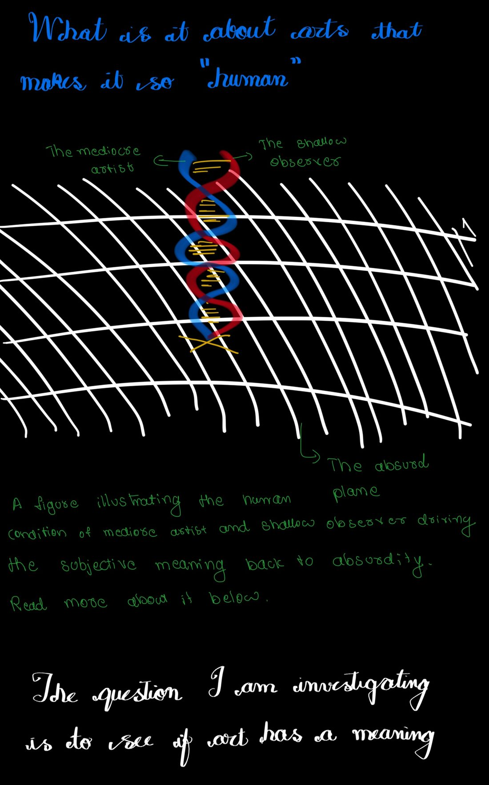
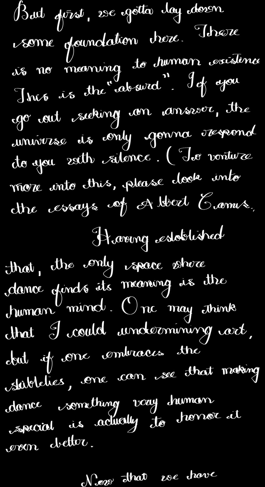
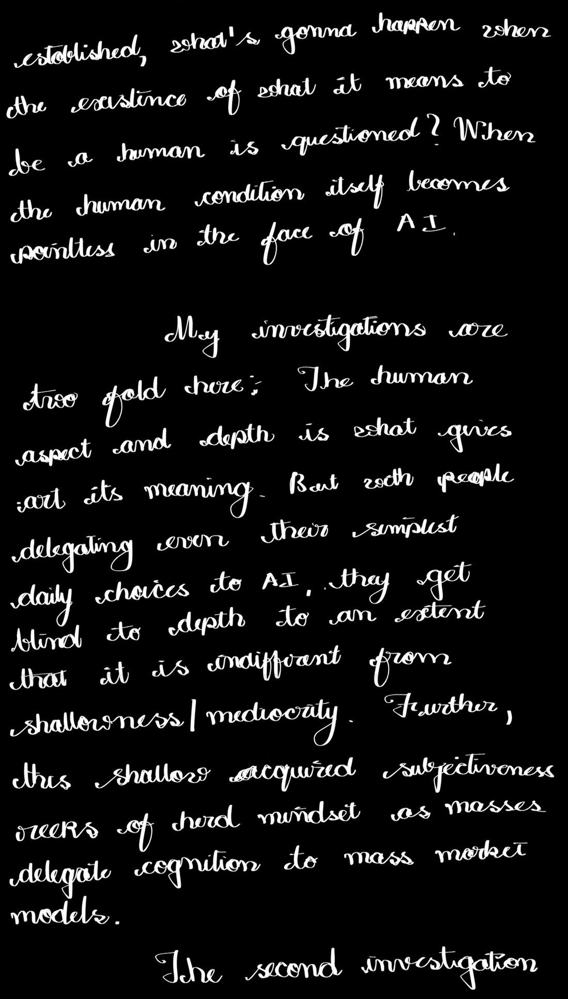
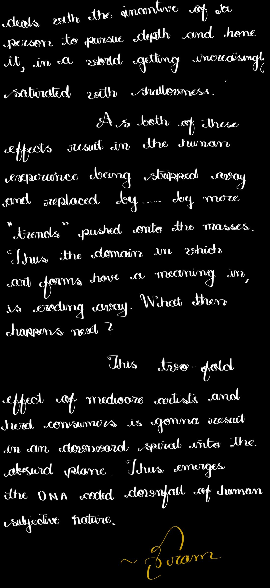

[Figure: a DNA helix rising through a curved grid. One strand is labelled “the mediocre artist”, the other “the shallow observer”; the grid is “the absurd plane”.] A figure illustrating the human condition of mediocre artist and shallow observer driving the subjective meaning back to absurdity. Read more about it below.
The question I am investigating is to see if art has a meaning.
But first, we gotta lay down some foundation here. There is no meaning to human existence. This is the “absurd”. If you go out seeking an answer, the universe is only gonna respond to you with silence. (To venture more into this, please look into the essays of Albert Camus.)
Having established that, the only space where dance finds its meaning is the human mind. One may think that I could be undermining art, but if one embraces the subtleties, one can see that making dance something very human special is actually to honor it even better.
Now that we have established, what’s gonna happen when the existence of what it means to be a human is questioned? When the human condition itself becomes pointless in the face of AI.
My investigations are two fold here: The human aspect and depth is what gives art its meaning. But with people delegating even their simplest daily choices to AI, they get blind to depth to an extent that it is indifferent from shallowness / mediocrity. Further, this shallow acquired subjectiveness reeks of herd mindset as masses delegate cognition to mass market models.
The second investigation deals with the incentive of a person to pursue depth and hone it, in a world getting increasingly saturated with shallowness.
As both of these effects result in the human experience being stripped away and replaced by….. by more “trends” pushed onto the masses. Thus the domain in which art forms have a meaning in, is eroding away. What then happens next?
This two-fold effect of mediocre artists and herd consumers is gonna result in a downward spiral into the absurd plane. Thus emerges the DNA coded downfall of human subjective nature.
~ Sriram